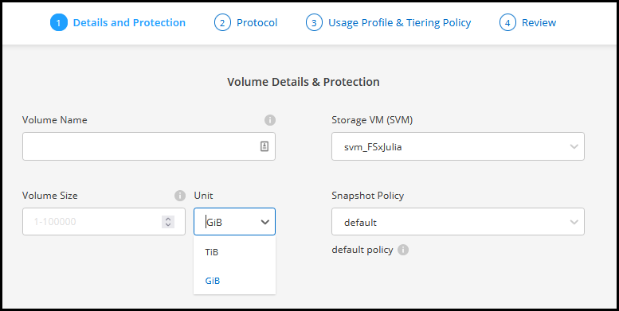
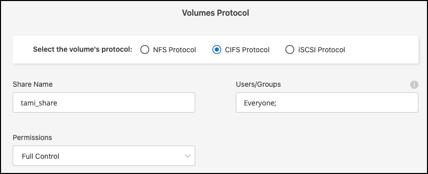

ドキュメントの変更をリクエスト
ドキュメントの変更をリクエスト GitHub で編集
GitHub で編集 寄稿者向けガイド
寄稿者向けガイドONTAP 用の Amazon FSX ボリュームを作成します
作業環境をセットアップしたら、 ONTAP ボリュームの FSX を作成してマウントできます。
ボリュームを作成します
Cloud Manager では、 FSX for ONTAP 作業環境から NFS ボリュームと CIFS ボリュームを作成および管理できます。ONTAP CLI を使用して作成された NFS ボリュームと CIFS ボリュームは、 FSX for ONTAP の作業環境にも表示されます。
iSCSI ボリュームは、 ONTAP CLI 、 ONTAP API 、または Cloud Manager API を使用して作成し、 FSX for ONTAP 作業環境で Cloud Manager を使用して管理できます。
必要なもの：
-
アクティブです "AWS のコネクタ"。
-
SMB を使用する場合は、 DNS と Active Directory を設定しておく必要があります。DNS と Active Directory のネットワーク設定の詳細については、を参照してください "AWS ：自己管理型の Microsoft AD を使用するための前提条件"。
-
FSX for ONTAP 作業環境を開きます。
-
有効になっているコネクタがない場合は、コネクタを追加するように求められます。
-
[* Volumes （ボリューム） ] タブをクリックします
-
[ ボリュームの追加 ] をクリックします。

-
* ボリュームの詳細と保護 * ：
-
新しいボリュームの名前を入力します。
-
Storage VM （ SVM ）のフィールドには、作業環境の名前に基づいて SVM が自動的に設定されます。
-
ボリュームサイズを入力して単位（ GiB または TiB ）を選択します。ボリュームサイズは使用量とともに増加することに注意してください。
-
Snapshot ポリシーを選択します。デフォルトでは、 Snapshot は 1 時間ごと（最新の 6 つのコピーを保持）、 1 日ごと（最新の 2 つのコピーを保持）、および 1 週間ごと（最新の 2 つのコピーを保持）に作成されます。
-
「 * 次へ * 」をクリックします。

-
-
* プロトコル * ： NFS または CIFS ボリューム・プロトコルを選択します。
-
NFS の場合：
-
アクセス制御ポリシーを選択します。
-
NFS バージョンを選択します。
-
カスタムエクスポートポリシーを選択します。有効な値条件の情報アイコンをクリックします。

-
-
CIFS の場合：
-
共有名を入力します。
-
ユーザまたはグループをセミコロンで区切って入力します。
-
ボリュームの権限レベルを選択します。

-

この作業環境で最初に CIFS ボリュームを使用する場合は、 _Active Directory_or_Workgroup_setup を使用して CIFS 接続を設定するように求められます。 -
Active Directory の設定を選択した場合は、次の設定情報を入力する必要があります。
フィールド 説明 DNS プライマリ IP アドレス
CIFS サーバの名前解決を提供する DNS サーバの IP アドレスです。これらの DNS サーバには、 Active Directory の LDAP サーバと、 CIFS サーバが参加するドメインのドメインコントローラを見つけるために必要なサービスロケーションレコード（ SRV ）が含まれている必要があります。
参加する Active Directory ドメイン
CIFS サーバを参加させる Active Directory （ AD ）ドメインの FQDN 。
ドメインへの参加を許可されたクレデンシャル
AD ドメイン内の指定した組織単位（ OU ）にコンピュータを追加するための十分な権限を持つ Windows アカウントの名前とパスワード。
CIFS サーバの NetBIOS 名
AD ドメイン内で一意の CIFS サーバ名。
組織単位
CIFS サーバに関連付ける AD ドメイン内の組織単位。デフォルトは CN=Computers です。
DNS ドメイン
Storage Virtual Machine （ SVM ）の DNS ドメインです。ほとんどの場合、ドメインは AD ドメインと同じです。
NTP サーバ
Active Directory DNS を使用して NTP サーバを設定するには、 * NTP サーバ設定を有効にする * を選択します。別のアドレスを使用して NTP サーバを設定する必要がある場合は、 API を使用してください。を参照してください "Cloud Manager 自動化に関するドキュメント" を参照してください。
-
ワークグループセットアップを選択した場合は、 CIFS 用に設定されているワークグループのサーバとワークグループ名を入力します。
-
「 * 次へ * 」をクリックします。
-
-
-
* 使用状況プロファイルと階層化 * ：
-
デフォルトでは、 * Storage Efficiency * は無効になっています。この設定を変更して、重複排除と圧縮を有効にすることができます。
-
デフォルトでは、 * 階層化ポリシー * は * Snapshot のみ * に設定されています。ニーズに応じて別の階層化ポリシーを選択できます。
-
「 * 次へ * 」をクリックします。

-
-
* 確認 * ：ボリューム構成を確認します。設定を変更するには * 戻る * をクリックし、ボリュームを作成するには * 追加 * をクリックします。
新しいボリュームが作業環境に追加されます。
ボリュームをマウント
Cloud Manager でのマウント手順を参照して、ホストにボリュームをマウントできるようにします。
-
作業環境を開きます。
-
音量メニューを開き、「 * 音量をマウントする * 」を選択します。

-
指示に従ってボリュームをマウントします。